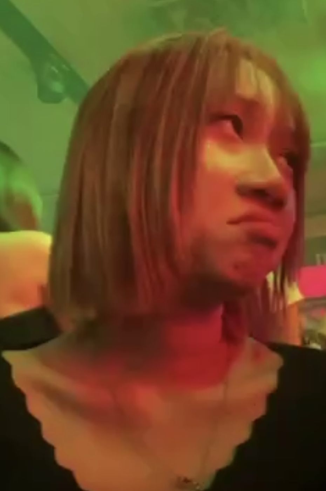
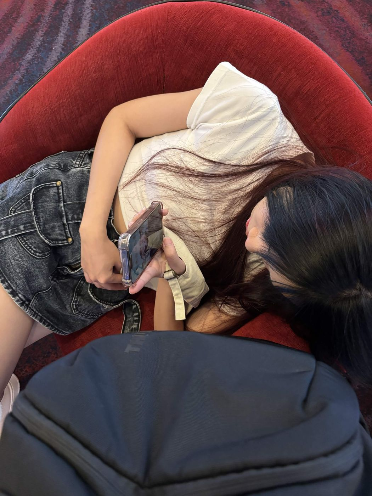
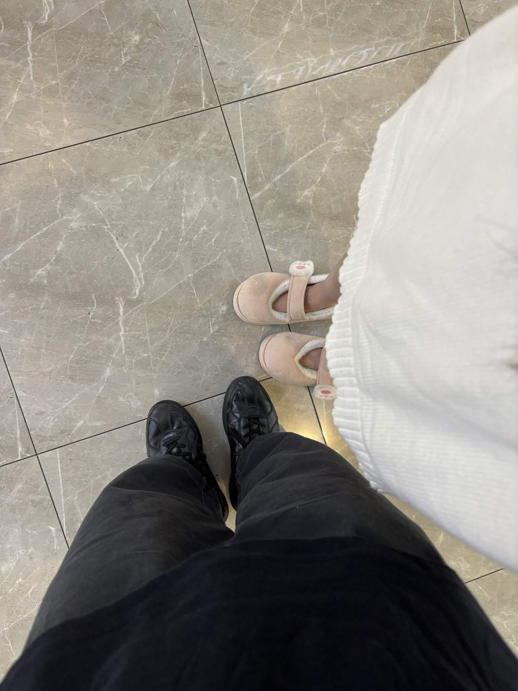

มีอะไรจะบอก… สำหรับเธอคนเดียว
ดึงแล้วปล่อย
ถึงเธอ… คนที่เรารักที่สุด
Happy 4 Months
🎀 anniversary with you 🫰🏻
ถ้านับดี ๆ นะ…
- 0เดือน ที่เราได้รู้จักกัน
- 0เดือน ที่เราเป็นคนคุยกัน
- 0เดือน ที่เธอเป็นแฟนของเรา
อีกไม่กี่เดือน ก็จะครบหนึ่งปีที่เรารู้จักกันแล้วนะ
ยิ่งเวลาผ่านไป เรายิ่งรักเธอ
ยิ่งผูกพัน และยิ่งอยากอยู่กับเธอนาน ๆ
เธอน่ารักตั้งแต่วันแรก
แต่งเต็มก็สวย หน้าสดก็สวย — เรามองเธอไม่เคยเบื่อเลยสักครั้ง

แล้วเราก็ได้เห็นเธอ
ในมุมที่คนอื่นไม่เห็น
หน้าตลก ๆ ตอนโดนแอบถ่าย หน้าจริงจังตอนกินราเมง — เราชอบหมดทุกมุมเลย

ถึงไม่ได้อยู่ด้วยกัน
แต่เธอก็อยู่ตรงนั้นเสมอ
ตีหนึ่งสิบเจ็ด เธอหลับไปแล้ว แต่สายยังไม่วาง — เราชอบช่วงเวลานี้ที่สุดเลย
สี่เดือนที่ผ่านมา…
Thank you
ขอบคุณที่ทำให้ทุกวันของเราดีขึ้น

รักแฟนมากนะ
ขอบคุณที่เข้ามาในชีวิตเรา
อยู่ข้าง ๆ กันแบบนี้ไปนาน ๆ นะ ♡
🎀 Happy 4 Month Anniversary with you 🫰🏻